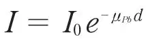
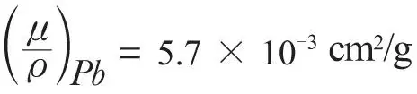
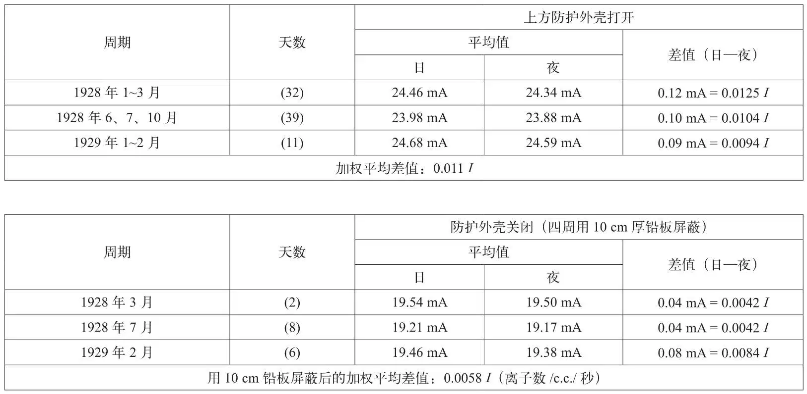

英文
英文维克托·赫斯
编者按
物理学家们仍在思考宇宙射线的性质。以前的研究未能找到任何证据证明太阳发射了这类射线，如今维克托·赫斯报告了他用新的实验结果说明确实如此。正如他所指出的，在瑞士阿尔卑斯山上的高海拔区进行的一项最新实验发现，辐射的平均强度白天比晚上高。采用铅屏蔽板以后再做的实验表明，太阳光中包含一个穿透力很强的射线成分，其强度约为宇宙射线总观测强度的0.5%。赫斯认为宇宙射线很可能起源于恒星，因为除太阳以外所有其他恒星发射的宇宙射线很可能与太阳发射的一样多。这些粒子的确切性质现在还不清楚。 英文
在过去，所有的观测者一致认为，在宇宙超级辐射的总强度中，太阳没有任何值得注意的贡献。近年来，随着观测仪器灵敏度的不断增强，以及在不同国家、不同实验环境下进行的观测次数不断增多，于是有可能再一次研究由太阳造成的影响是不是可以完全忽略不计。 英文
有人把霍夫曼教授的高压电离室放在瑞士恩加丁地区的穆拉古尔山（海拔2,456 m）上，由此得到了一些非常准确而且可靠的有关宇宙辐射的数据。这些测量结果毫无疑问地说明白天的平均辐射强度要略高于夜晚。霍夫曼和林霍尔姆[1]给出了昼夜间强度差异的平均值：当仪器上方没有屏蔽时，平均值为0.12 mA，或~0.0125个离子每立方厘米每秒；当使用6 cm和9 cm厚的铅板屏蔽时，平均值是0.04 mA，~0.0042 I（符号“I”通常表示“每立方厘米每秒的离子数”）。林霍尔姆[2]使用同样的仪器进行了更长期的观测（8个月），所得数据列于附表中（参见他文章中的表6）。 英文
在霍夫曼和林霍尔姆使用的仪器中，一个1 mA的补偿电流相当于0.104 I的电离值。由此得出，在穆拉古尔山上由顶部没有铅板屏蔽的仪器测得的超级辐射的总强度大约为2.50 I。 英文
我们至少可以暂时把昼夜间的强度差视为太阳贯穿辐射的实际强度。于是马上就可以看到在海拔2,456 m的穆拉古尔山上，大约有一半这类太阳辐射成分能够穿过10 cm厚的铅板。因此这部分辐射的穿透性大大高于放射性物质发出的γ射线。如果我们假设所有上述的0.011 I全部起源于太阳，我们就可以根据方程

计算出铅的吸收系数μPb（只考虑垂直入射的情况已经足够），代入I0 = 0.011，I = 0.0058和d = 10 cm，我们得到μPb = 0.064 cm–1和质量吸收系数
。 英文
这个数值几乎精确地等于所有宇宙辐射在这个高度上的质量吸收系数（比特纳在海拔2.3 km的艾格尔冰川上的测量值为(μ/ )Pb= 6.3×10–3 cm2/sec）。[3]如果我们假设在没有屏蔽层的仪器上测量到的昼夜间差异（0.011 I）中，有一部分是由于白天空气中镭射气和其产物的平均含量上升引起的，那么我们观察到的太阳贯穿射线会更硬，即它们的质量吸收系数会更小。因此我们认为以下结论是合理的：太阳发出的贯穿射线的穿透能力至少与著名的宇宙超穿透辐射相当。太阳贯穿射线的总量（在海拔2,456 m处）大约占宇宙辐射总强度的0.5%，如附表所示。当然，有人可能将白天辐射总量的升高解释为受太阳间接影响所致（即白天被加热的大气增加了对超穿透射线的散射）。然而在这种情况下，因散射造成的辐射——由昼夜间辐射量的差异表示，会比一般的宇宙辐射更软；而这与上面分析的实验结果是矛盾的。 英文
)Pb= 6.3×10–3 cm2/sec）。[3]如果我们假设在没有屏蔽层的仪器上测量到的昼夜间差异（0.011 I）中，有一部分是由于白天空气中镭射气和其产物的平均含量上升引起的，那么我们观察到的太阳贯穿射线会更硬，即它们的质量吸收系数会更小。因此我们认为以下结论是合理的：太阳发出的贯穿射线的穿透能力至少与著名的宇宙超穿透辐射相当。太阳贯穿射线的总量（在海拔2,456 m处）大约占宇宙辐射总强度的0.5%，如附表所示。当然，有人可能将白天辐射总量的升高解释为受太阳间接影响所致（即白天被加热的大气增加了对超穿透射线的散射）。然而在这种情况下，因散射造成的辐射——由昼夜间辐射量的差异表示，会比一般的宇宙辐射更软；而这与上面分析的实验结果是矛盾的。 英文
1929年夏天，斯坦莫勒[4]在松布利克山峰顶（海拔约3,100 m）用三种不同仪器（两台柯尔霍斯特型双环静电计和一台伍尔夫–柯尔霍斯特型）的最新观测也明确显示出测量的超级辐射总量白天的数值略高于夜晚；差值大约为0.7%（用上面提到的三种仪器测量的差值取平均后得到0.06 I，顶部没有屏蔽的仪器在松布利克山测量的总强度约为8.7 I。）当仪器四周用7 cm厚的铁板屏蔽时仍然可以观测到辐射量的增加，但是在松布利克山上的观测次数太少不足以作出定量计算。人们也许会提到即使从之前赫斯和科夫勒[5]在奥柏（海拔2,000 m）山顶的观测数据中也可以看出太阳带来的影响（超级辐射加上地球辐射的总强度在13个月中的平均值：白天为11.11 I，晚上为11.09 I），尽管那时的仪器没有屏蔽掉地球辐射的影响。0.02 I的差别在当时几乎可以被看作是零。 英文
至于使用伍尔夫型或柯尔霍斯特型仪器进行的短周期观测（比如冯萨利斯在少女峰和修士峰以及比特纳在阿尔卑斯山其他地方用柯尔霍斯特型仪器所做的观测），由于仪器精度不够高，自然也测不出太阳的超级射线成分的影响；因此科兰[6]使用在修士峰和楚格峰上的观测结果得出太阳对辐射量无影响的结论。从下表的数据中完全可以得到以下结论，根据目前能得到的所有最精确的观测结果，我们认为在海拔2.5 km处，太阳辐射占宇宙超级辐射总强度的0.5%。太阳超能射线的穿透能力至少与宇宙辐射的总体穿透能力相当。毫无疑问，目前太阳的这一超穿透辐射成分的贡献仍然处于较低的水平。由于这一成分的绝对强度值很小，要想证实其存在非常困难，霍夫曼和施坦因克在柯尼斯堡和哈雷对总辐射量的非常精确的数据进行了分析，他们在这方面的努力也许会取得成功。 英文

作为离地球最近的恒星，如果太阳发出的射线具有与总的宇宙穿透性辐射大致相同的性质，则我们不得不假定所有恒星都是发出类似射线的辐射源。太阳是一颗年代比较久远的黄矮星，它释放出的超级穿透性射线在总量上自然会远远少于那些年轻一些的巨星。当然，我们观察到的超级穿透性射线只能来自恒星的最外层，因为它们不可能穿过厚度超过几百米水当量的物质层。 英文
我们现在还不能对恒星超级射线的性质作更多的说明：不能判断它们到底是被宇宙电场加速的电子或质子，还是在原子质量减小或湮灭过程中放出的光子（量子）。按照爱丁顿和密立根的想法，虽然最小值原理假说更倾向于引导我们尝试用以太阳超穿透性辐射为实验证据的恒星起源假说来解释全部观察到的现象，但是一部分超穿透性宇宙辐射源自恒星的假说未必非要排除另一部分宇宙辐射来自星际空间的可能性，星际空间中的宇宙辐射是在氢元素合成某些较重元素的过程中产生的。 英文
这篇短文中的结论理所当然地支持了能斯特教授在1921年时就已经率先提出的想法[7]。几年前，当基于恒星时的日周期的首次观测结果发表出来时，他就希望能够提高仪器的灵敏度，直到我们能够分辨出来自单个恒星或单一恒星星云的超级射线。我认为本文提供的结果可以表明朝这方面的努力已经开始。至少现在检测出太阳超级射线的影响力和穿透力已经成为可能。需要补充说明的是，这里提出的有关宇宙超级射线起源于恒星的证据完全独立于基于恒星时的日周期的存在，后者是一个仍在讨论之中的课题。 英文
（史春晖 翻译；马宇蒨 审稿）